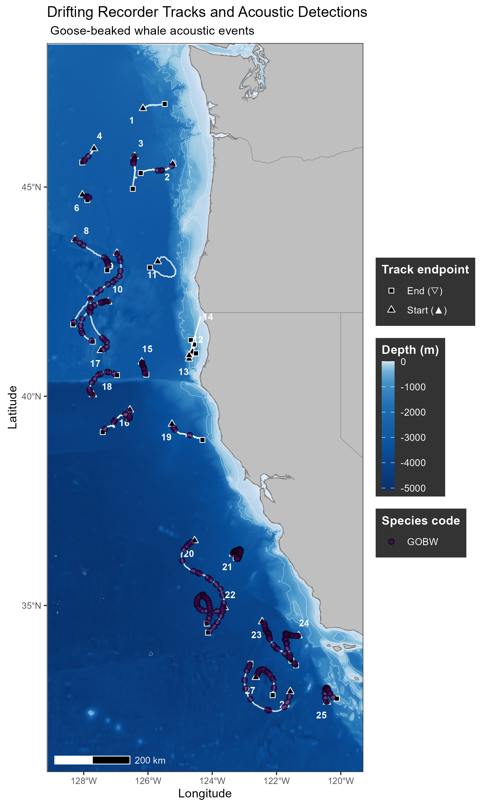
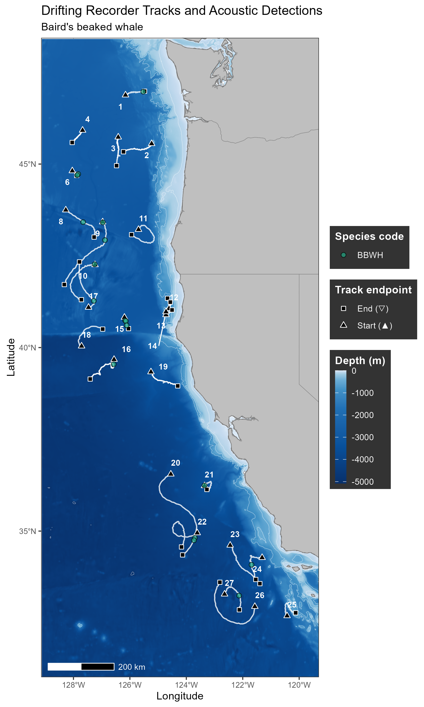
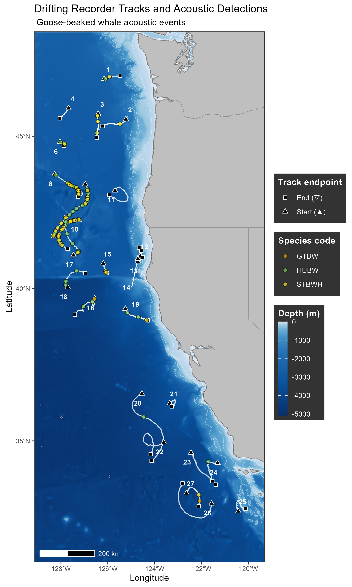
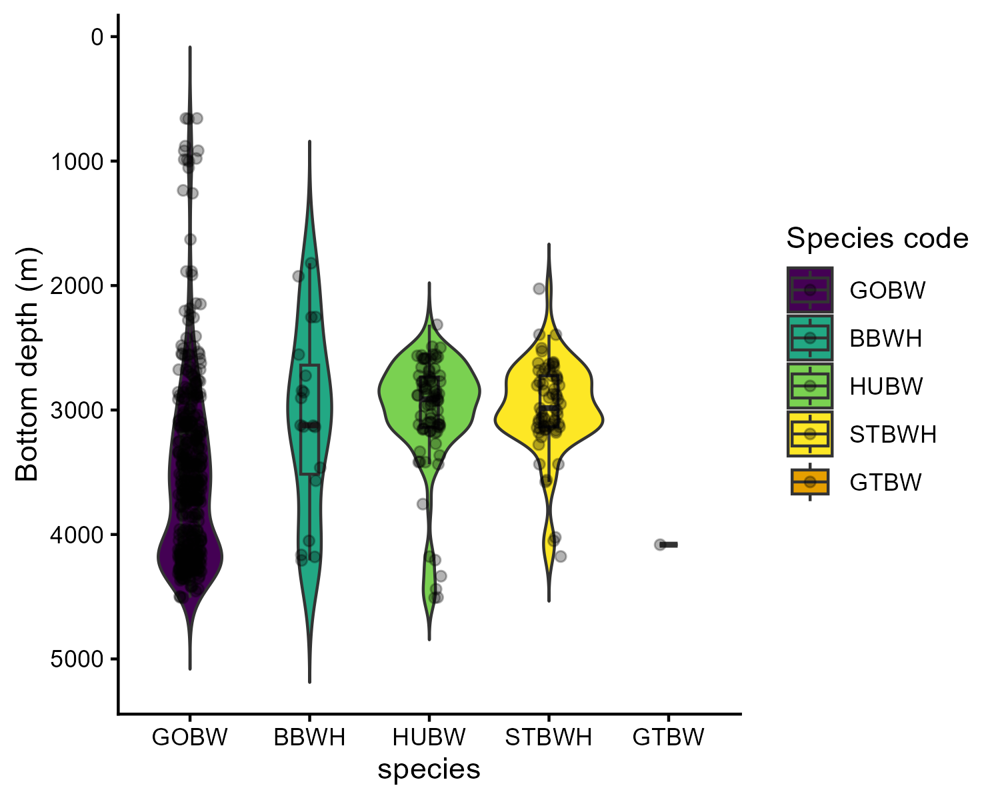

[1] 2.380952[1] 3.076923[1] 2.380952[1] 3.076923There were 637 total beaked whale events detected on 22 separate drifts, corresponding to an overall encounter rate of 3.1261405 encounters per 24 hours of recording. Encounter rates varied among individual drifts, ranging from 0-6.9 encounters per 24 hours (median = 1.9, IQR = [0.9-4.1]. The highest encounter rates were observed during drifts 10 (6.9 encounters per 24 h), drift 22 (6.7 encounters per 24 h), and drift 9 (6.2 encounters per 24 h), while drifts 12, 13, and 14 contained zero beaked whale acoustic detections.
Five distinct beaked whale species were acoustically detected, including goose-beaked, Hubb’s, Stejneger’s, Baird’s, and gingko-toothed beaked whales (Table 1). Encounters with multiple beaked whales were relatively uncommon, comprising 28 of 595 encounters (5 %). Mixed-species of beaked whale encounters occurred on 11 drifts, with 0-7 mixed species encounters per drift. The greatest numbers of mixed species were observed on drifts 9 (7 encounters) and drift 10 (7 encounters).
Analyst comments noted dolphins at the surface during 163 beaked whale encounters across 19 drifts. Because these observations were recorded opportunistically during acoustic review rather than through a standardized protocol, they are reported as incidental observations rather than as a rate or proportion of encounters.
| Species | Acoustic events | Total duration (min) | Median event duration (min) | Total clicks |
|---|---|---|---|---|
| Berardius bairdii | 19 | 425 | 10 | 91,676 |
| Mesoplodon carlhubbsi | 84 | 1,039 | 10 | 80,060 |
| Mesoplodon ginkgodens | 1 | 13 | 13 | 88 |
| Mesoplodon stejnegeri | 65 | 704 | 10 | 125,906 |
| Ziphius cavirostris | 468 | 7,378 | 13 | 305,978 |



Bottom depth at acoustic encounters differed among species (Kruskal-Wallis: χ²(3) = 120.71, p < 0.001). Goose-beaked whale encounters occurred at the greatest median depth (3,679 m; IQR=3,182-4,178 m), compared with Baird’s (3,123 m; IQR=2,639-3,516 m), Stejneger’s (2,984 m; IQR=2,725-3,135 m) and Hubbs’ beaked whales (2,914 m; IQR=2,735-3,141 m). Post-hoc Dunn tests with Benjamini–Hochberg correction indicated significant differences between goose-beaked and Baird’s beaked whales (p = 0.0017), goose-beaked and Hubbs’ beaked whales (p<0.001), and goose-beaked and Stejneger’s beaked whales (p<0.001). No significant differences were detected among Baird’s, Hubbs’ and Stejneger’s beaked whales (all adjusted p≥ 0.47). The single gingko-toothed beaked whale encounter occurred over a bottom depth of 4,082 m, but was excluded from statistical comparisons because only one encounter was detected.

No significant differences in acoustic event rates between day and night were detected for any species. Day rate ratios were 1.20 for GOBW (95% CI = 1.00–1.44, p = 0.051), 1.09 for BBWH (95% CI = 0.44–2.72, p = 0.848), 1.08 for HUBW (95% CI = 0.70–1.66, p = 0.733), and 0.78 for STBWH (95% CI = 0.47–1.30, p = 0.340). Baird’s beaked whales had a substantially greater uncertainty because of the smaller number of encounters.
Goose-beaked whales were the most abundant and wide-spread beaked whale species acoustically detected in this study. Overall, there were 468 goose-beaked whale encounters identified on 21 drifts, with encounter durations ranging from 1-80 minutes (median=13, IQR= 2-25).
Hubb’s beaked whales were the second most common beaked whale species acoustically detected in this study. Overall there were 84 acoustic encounters identified on 13 drifts, with encounter durations ranging from 1-80 minutes (median=10, IQR=4-16). Hubbs’ beaked whales were predominantly detected in the northern California Current, with 98% (n=82) of encounters detected north of San Francisco, CA (roughly latitude 37.77°N.
Stejneger’s beaked whales were the third most common beaked whale species acoustically detected in this study. Overall there were 65 acoustic encounters identified on 12 drifts, with encounter durations ranging from 1-86 minutes (median=10, IQR=6-13). Stejneger’s beaked whales were predominantly detected in the northern California Current, with 97% (n=63) of encounters detected north of San Francisco, CA (roughly latitude 37.77°N).
Baird’s beaked whales were detected in 19 acoustic encounters on 13 drifts, with encounter durations ranging from 1-124 minutes (median=10, IQR=5-20). Baird’s beaked whales were detected throughout the California Current.
There was one acoustic detection of gingko-toothed whales that was 13.4 minutes in duration. This event was detected on drift 27, in the southern extent of the study offshore of the Southern California Bight (roughly latitude 33°N). During this encounter, there were concurrent echolocation clicks detected in separate click trains from goose-beaked whales at depth and delphinid echolocation clicks in the upper water column.
Preliminary maps of beaked whale acoustic detections
Add plots for
distribution of beaked whale detection angles
detection function
map of density estimates per drift
Add tables of: